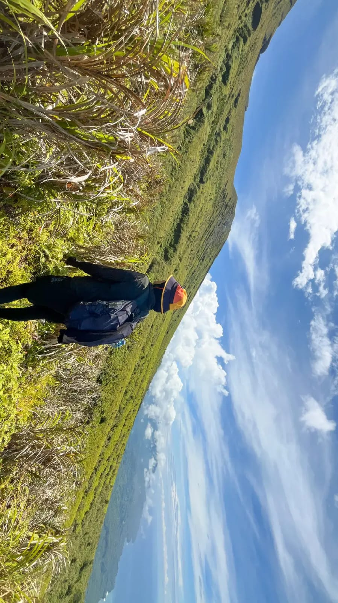
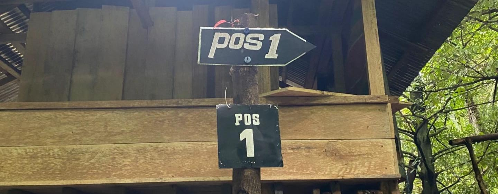

Informasi Status Gunung
Berdasarkan informasi tanggal 7 November 2026, Gunung Gamkonora berada pada Level II (Waspada) dan aktivitas pendakian ditutup. Pengunjung harus mengikuti informasi terbaru dari PVMBG dan petugas Pos Pengamatan Gunung Api Gamkonora.
Jalur Pendakian
Mengenal rute dan karakteristik perjalanan menuju puncak Gunung Gamkonora.

Jalur pendakian Gunung Gamkonora dapat dimulai dari Desa Gamsungi, Kecamatan Ibu, Kabupaten Halmahera Barat. Sebelum melakukan pendakian, pengunjung perlu melakukan registrasi dan mengikuti pengarahan dari petugas setempat.
Karakteristik Jalur
Area Perkebunan
Bagian awal perjalanan melewati kawasan perkebunan masyarakat.
Hutan Tropis
Jalur dilanjutkan melalui kawasan hutan dengan vegetasi yang cukup rapat.
Jalur Menanjak
Beberapa bagian memiliki medan menanjak yang membutuhkan kondisi fisik baik.
Area Bebatuan
Mendekati kawasan puncak terdapat medan bebatuan dan area yang lebih terbuka.
Informasi Rute
Daya Tarik Alam
Gunung Gamkonora memiliki daya tarik berupa kawasan kawah, danau kecil, lembah, serta panorama alam Halmahera. Keindahan bentang alam tersebut menjadi salah satu hal yang menarik untuk dikenal melalui informasi dan dokumentasi pendakian.
Pos dan Titik Penting Pendakian
Informasi titik-titik penting yang terdapat sepanjang jalur pendakian Gunung Gamkonora.

Sepanjang jalur pendakian terdapat beberapa titik yang menjadi penanda perjalanan. Titik-titik tersebut meliputi pos, area persinggahan, sumber air, camp area, kawah, dan lokasi pemandangan.
Daftar Pos dan Titik Penting
| No. | Pos / Titik | Ketinggian |
|---|---|---|
| 1 | Pos Pengamatan / Registrasi | 84 mdpl |
| 2 | Start Point | 104 mdpl |
| 3 | Pos 1 | 310 mdpl |
| 4 | Pos 2 | 541 mdpl |
| 5 | Pos 3 | 640 mdpl |
| 6 | Pos 4 | 818 mdpl |
| 7 | Pos Persinggahan | 1.019 mdpl |
| 8 | Titik Rawan Longsor | 1.066 mdpl |
| 9 | Pos 5 | 1.181 mdpl |
| 10 | Sumber Air 1 | 1.399 mdpl |
| 11 | Camp Area | 1.367 mdpl |
| 12 | Sumber Air 2 | 1.401 mdpl |
| 13 | Danau | 1.370 mdpl |
| 14 | Kawah | 1.382 mdpl |
| 15 | Spot View | 1.237 mdpl |
| 16 | Fasilitas Internet (Wi-Fi) | 1.614 mdpl |
| 17 | Spot View | 1.395 mdpl |
| 18 | Titik Rawan Longsor | 1.617 mdpl |
| 19 | Spot View | 1.613 mdpl |
| 20 | Puncak Gunung Gamkonora | 1.635 mdpl |
Daftar tersebut merupakan titik hasil pemetaan jalur, bukan berarti seluruh titik merupakan pos resmi atau memiliki fasilitas. Kondisi fasilitas di lapangan perlu dikonfirmasi kembali kepada pengelola atau petugas setempat.
Estimasi Waktu Pendakian
Perkiraan waktu perjalanan dan persiapan yang perlu diperhatikan sebelum melakukan pendakian.
Waktu perjalanan menuju puncak Gunung Gamkonora dapat berbeda-beda tergantung kondisi fisik, kecepatan berjalan, cuaca, kondisi jalur, dan waktu istirahat.
Perkiraan Waktu Perjalanan
4–5 Jam
Perkiraan perjalanan naik menuju puncak berdasarkan laporan perjalanan dari Pos Vulkanologi.
Menyesuaikan Kondisi
Waktu perjalanan turun bergantung pada kondisi medan, cuaca, dan kemampuan pendaki.
Persiapan Sebelum Pendakian
Estimasi waktu di atas merupakan informasi perencanaan, bukan jaminan waktu tempuh. Jangan melakukan pendakian selama akses masih ditutup atau belum diizinkan oleh pihak berwenang.